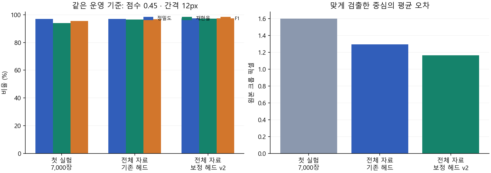
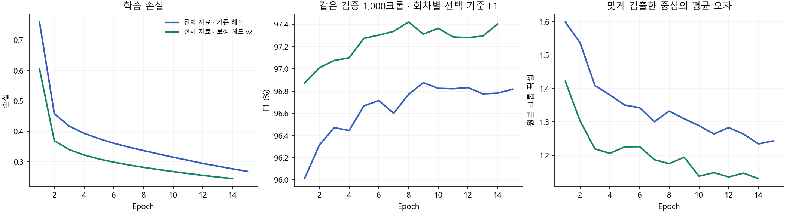
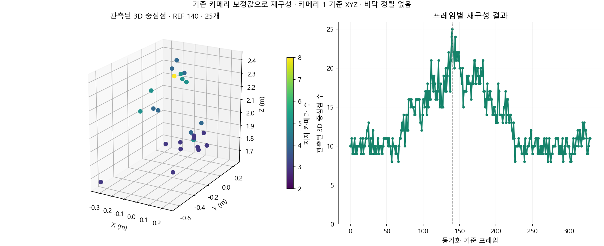

공개 영상 구간: 재생 2.0–6.5초
게시 영상은 원본 대비0.5배속으로 재생한 영상의2.0–6.5초 구간만 담았습니다. 원본 촬영 시간 약1.0–3.25초, 기준 프레임 REF60–194 · 135프레임 · 약4.50초에 해당합니다.
동영상만 잘랐습니다. 학습·검증 성능은 기존 평가 자료 기준이며, 아래 8월20일 검출·3D 집계와 3D뷰어는 전체330프레임(REF0–329) 기준입니다. 카메라 선택 화면의 표는 게시 클립135프레임만 다시 집계합니다.
실제 적용 영상 · 공개 클립
전체 라벨 학습과 히트맵 모듈 비교
같은 DINOv3 특징 위에서 자료량을 늘린 효과와, 위치 보정 구조를 추가한 효과를 구분해 확인합니다.
두 헤드 학습 완료실제 영상 적용: 전체 자료 · 보정 헤드 v2 · 점수 0.425 · 최소 간격 12.00px
특징 저장 77,002/77,002크롭 · complete · 작성 2026-11-18T13:35:09.235850+09:00
이번 학습에 포함한 범위
검수 자료 46,144장과 라벨 483,259개를 모두 확인했습니다. 그중 학습 영상의 415,746개 라벨은 전부 학습 크롭에 포함하며, 검증 영상의 67,513개 라벨은 가중치 학습에서 제외합니다.
원본 640×640 영역을 사용해 학습 65,956크롭, 검증 11,046크롭을 만들었습니다. 겹친 영역에서 같은 라벨이 다시 등장할 수 있으므로 크롭 수와 원본 이미지 수를 구분합니다.
초기 실험은 학습 7,000장이었습니다. 이번 비교에서는 동일한 검증 영상 전체를 계속 분리하고, 나머지 학습 영상을 모두 사용합니다.
같은 운영 기준으로 비교 · 점수 0.45 / 최소 간격 12px
| 모델 / 조건 | 정밀도 | 재현율 | F1 | 평균 오차 px | TP | FP | FN |
|---|---|---|---|---|---|---|---|
| 첫 실험 · 기존 헤드 · 학습 7,000장 | 97.03% | 94.07% | 95.53% | 1.60 | 6,375 | 195 | 402 |
| 전체 자료 · 기존 헤드 | 97.03% | 96.43% | 96.73% | 1.29 | 6,535 | 200 | 242 |
| 전체 자료 · 보정 헤드 v2 | 97.28% | 97.26% | 97.27% | 1.16 | 6,591 | 184 | 186 |
세 행 모두 첫 실험과 똑같은 원본 검증 1,000크롭·8px 일대일 중심 매칭입니다. 각 새 모델의 최선 epoch에 동일한 0.45 기준을 적용한 값입니다. —는 아직 결과가 없다는 뜻입니다.

각 모델이 검증에서 선택한 최선 기준
| 모델 / 조건 | 정밀도 | 재현율 | F1 | 평균 오차 px | TP | FP | FN |
|---|---|---|---|---|---|---|---|
| 전체 자료 · 기존 헤드epoch 9 · 점수 0.4 · 간격 12px | 96.30% | 97.46% | 96.88% | 1.31 | 6,605 | 254 | 172 |
| 전체 자료 · 보정 헤드 v2epoch 8 · 점수 0.4 · 간격 12px | 96.96% | 97.89% | 97.42% | 1.18 | 6,634 | 208 | 143 |
각 모델의 epoch와 점수 기준을 동일한 검증 1,000크롭에서 선택합니다. 서로 다른 점수 기준의 행은 위의 고정 운영 조건 표와 구분해서 읽어야 합니다.
학습 진행과 곡선
| 모델 | 상태 | 기록된 회차 | 최선 회차 | 종료 사유 |
|---|---|---|---|---|
| 전체 자료 · 기존 헤드 | 완료 | 15 | 9 | 검증 성능 정체 |
| 전체 자료 · 보정 헤드 v2 | 완료 | 14 | 8 | 검증 성능 정체 |

곡선의 F1은 각 회차에서 선택한 점수 기준의 결과입니다. 조기 종료는 저장된 검증 정체 규칙을 따릅니다.
전체 검증 영상의 라벨을 덮은 크롭 결과
| 모델 / 조건 | 정밀도 | 재현율 | F1 | 평균 오차 px | TP | FP | FN |
|---|---|---|---|---|---|---|---|
| 전체 자료 · 기존 헤드11,046크롭 · 선택용과 같은 촬영 영상 · 점수 0.4 / 12.0px | 96.93% | 97.09% | 97.01% | 1.29 | 81,317 | 2,577 | 2,437 |
| 전체 자료 · 보정 헤드 v211,046크롭 · 선택용과 같은 촬영 영상 · 점수 0.4 / 12.0px | 97.48% | 97.55% | 97.52% | 1.14 | 81,704 | 2,108 | 2,050 |
11,046크롭은 위 선택 검증과 같은 촬영 영상에 속하며 일부 라벨과 영역이 중복됩니다. 독립 외부 테스트가 아닙니다. 각 체크포인트가 학습 중 선택한 기준으로 한 번 평가한 값이며, 아래 실제 영상 적용 기준의 추가 보정과 구분합니다.
8월20일 실제 영상에 적용할 모델과 기준
전체 자료 · 보정 헤드 v2 · 점수 0.425 · 최소 간격 12.00px
분리해 둔 동일 검증 자료에서 정밀도 97.00% 이상을 만족하는 전체 학습 모델의 후보 중 재현율이 높은 설정을 선택합니다. 7월22일 외부 영상과 8월20일 적용 영상은 이 선택에 사용하지 않습니다.
선택한 설정은 기록된 검증 정밀도 목표를 만족합니다.
| 선택 검증 조건 | 정밀도 | 재현율 | F1 | 평균 오차 px | TP | FP | FN |
|---|---|---|---|---|---|---|---|
| 원래 검증 1,000크롭에서의 선택점 | 97.09% | 97.58% | 97.34% | 1.17 | 6,613 | 198 | 164 |
별도 날짜 검증 · 세 모델 동일 조건
| 모델 / 조건 | 정밀도 | 재현율 | F1 | 평균 오차 px | TP | FP | FN |
|---|---|---|---|---|---|---|---|
| 전체 자료 · 기존 헤드297크롭 · 점수 0.45 · 간격 6.0px | 78.46% | 83.47% | 80.89% | 3.51 | 1,581 | 434 | 313 |
| 첫 실험 · 기존 헤드297크롭 · 점수 0.45 · 간격 6.0px | 78.53% | 80.36% | 79.44% | 3.55 | 1,522 | 416 | 372 |
| 전체 자료 · 보정 헤드 v2297크롭 · 점수 0.45 · 간격 6.0px | 81.45% | 86.01% | 83.67% | 3.46 | 1,629 | 371 | 265 |
별도 날짜인 7월22일 297크롭에 점수 0.45와 간격 6px를 똑같이 적용합니다. 1920px 내보내기 이미지의 6px는 원본 3840px의 12px에 해당합니다. 외부 자료로 모델이나 기준을 다시 선택하지 않습니다.
실제 영상에 적용할 운영 모델 · 외부 확인
| 모델 / 조건 | 정밀도 | 재현율 | F1 | 평균 오차 px | TP | FP | FN |
|---|---|---|---|---|---|---|---|
| 실제 영상에 선택한 운영 모델297크롭 · 점수 0.425 · 간격 6.0px | 80.73% | 86.91% | 83.70% | 3.47 | 1,646 | 393 | 248 |
운영 모델과 점수 기준은 원래 검증 1,000크롭에서 먼저 선택하고 외부 평가에서 바꾸지 않습니다. 아래 행은 그 선택을 고정한 외부 확인입니다.
참고 · 이전 설정의 외부 평가
| 모델 / 조건 | 정밀도 | 재현율 | F1 | 평균 오차 px | TP | FP | FN |
|---|---|---|---|---|---|---|---|
| 첫 실험 · 이전 외부 평가297크롭 · 점수 0.4 · 간격 4.0px | 76.86% | 83.63% | 80.10% | 3.57 | 1,584 | 477 | 310 |
이전 실험 기록입니다. 점수와 간격이 위 통제 비교와 다르므로 같은 조건의 모델 성능 비교로 읽으면 안 됩니다.
선택한 새 모델의 실제 영상과 3D · 전체330프레임 집계
실제 8대 카메라 영상에서 330프레임을 처리해 3D 관측 4,343건을 만들었습니다. 재투영 RMS 중앙값은 3.38px입니다. 익명 트랙은 1,012개, 길이 중앙값은 2.0프레임입니다. 프레임별 점군은 생성됐지만 연속 마커 추적에는 끊김이 남습니다.

재투영 오차는 여러 카메라 관측 간의 기하 일관성 지표이며 독립 정답에 대한 절대 3D 정확도가 아닙니다. 익명 트랙과 해부학적 마커 ID·관절 추적을 구분해야 합니다.
히트맵 모듈은 무엇을 바꿨나
기존 구성은 특징을 두 번 확대해 중심과 좌표 보정값을 예측합니다. v2는 낮은 해상도에서 주변 문맥을 함께 보고, 확대 후 좁은 잔차 경로로 위치 신호를 보정하는 사용자 데이터용 실험입니다. DINOv3 마지막 특징과 출력 해상도는 같습니다.
2단 히트맵 헤드는 ViTPose 공식 구성에서도 확인할 수 있고, DINOv3는 공간 특징과 dense-task 구현을 제공합니다. 여기의 v2는 이 자료에 맞춘 별도 실험이며 공식 모델의 검증된 성능 개선이나 SOTA 구현이라고 주장하지 않습니다. ·
파라미터 수와 실제 GPU 측정
| 헤드 | 학습 파라미터 | Conv MACs / 크롭 | 배치64 학습 스텝 ms | 할당 최고 GB |
|---|---|---|---|---|
| 기존 2단 Deconv | 918,083 | 2,102,067,200 | 24.07 | 1.262 |
| 잔차 보정 v2 | 389,811 | 1,180,672,000 | 50.98 | 2.451 |
배치 64에서 v2 학습 스텝은 기존의 2.12배 시간이 들었습니다. 파라미터와 계산식상 연산 수가 줄어도 여러 작은 연산과 보정 단계 때문에 실제 GPU 시간이 줄어들지는 않았습니다.
합성 캐시 특징에서 BF16 전방·손실·역전파·클리핑·AdamW를 포함한 짧은 학습 측정입니다. DINO 전방 계산·영상 읽기·원본 프레임 추론 시간은 제외합니다. 현재 설계의 측정은 2회 준비 후 8회 타이밍이며 전체 처리 속도로 해석하면 안 됩니다.
해석 범위
- 46,144장 전부를 자료 분할에 포함하지만, 가중치 학습은 40,368장과 그 안의 415,746개 라벨에만 수행합니다. 5,776장·67,513개 라벨은 검증용으로 분리합니다.
- 첫 실험과 똑같은 검증 1,000크롭으로 epoch와 점수 기준을 고르며, 이 자료는 독립 테스트가 아닙니다.
- 전체 검증 11,046크롭에는 선택용 1,000크롭과 같은 영상의 겹치는 영역이 포함됩니다. 영상 전체의 고유 마커 수나 독립 일반화 성능으로 해석하면 안 됩니다.
- 크롭은 라벨 위치를 바탕으로 선택되며 원본 해상도를 유지합니다. 이 평가는 전체 화면 배경 오검출률을 직접 측정하지 않습니다.
- 두 헤드는 같은 frozen DINOv3 특징, 학습 자료, seed, 손실, 선택 규칙으로 비교합니다. 두 헤드의 차이는 아래 실제 측정 결과로 판단합니다.
- 합성 속도 측정은 이미 추출한 특징 위에서의 헤드 학습 스텝입니다. 원본 디코딩·DINO 전방 계산·전체 추론 속도를 포함하지 않습니다.
실제 결과 파일


결과는 현재 디스크에 존재하는 기록만 읽어 생성했습니다. 구조화된 보고서 JSON ·